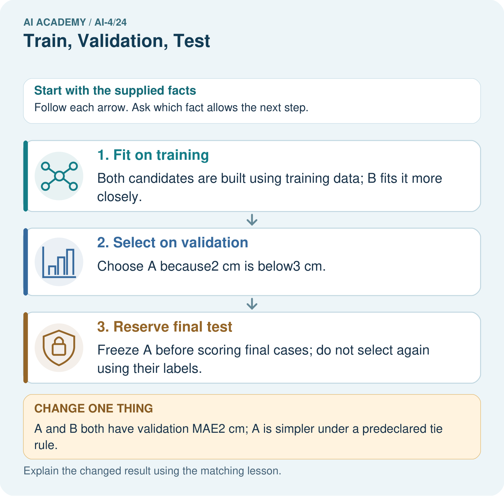
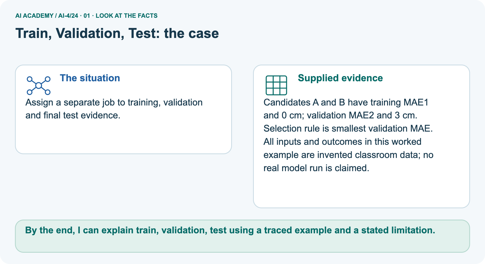
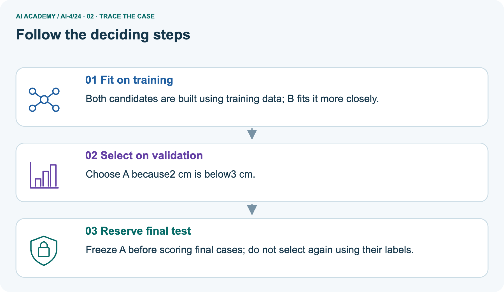
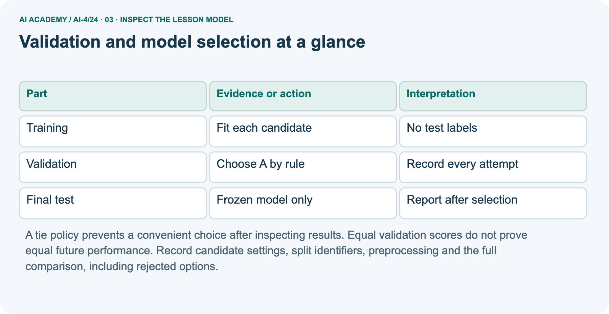
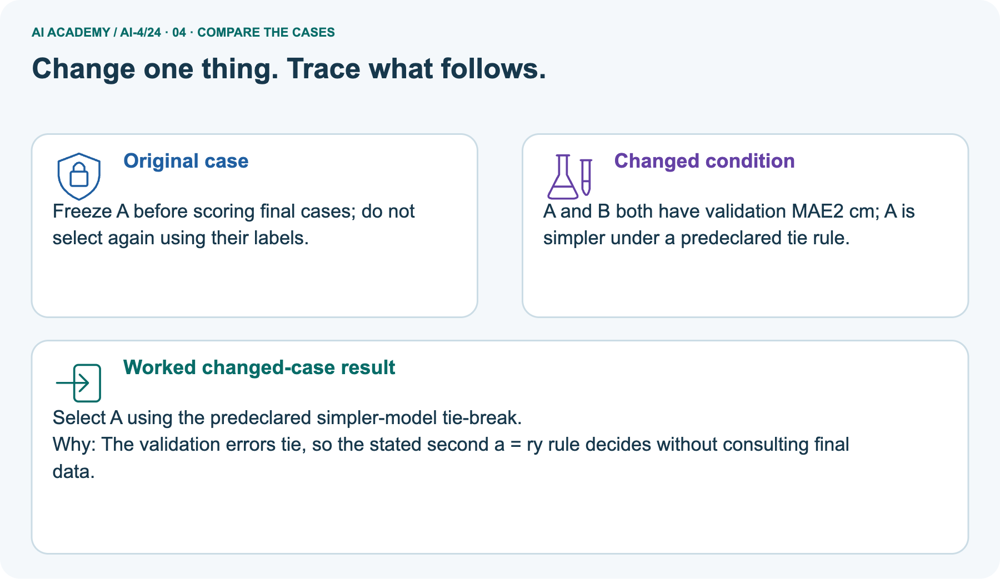
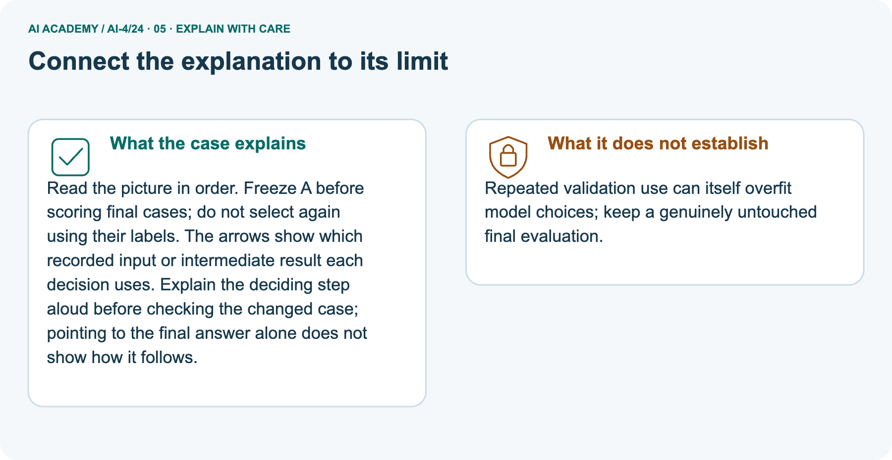
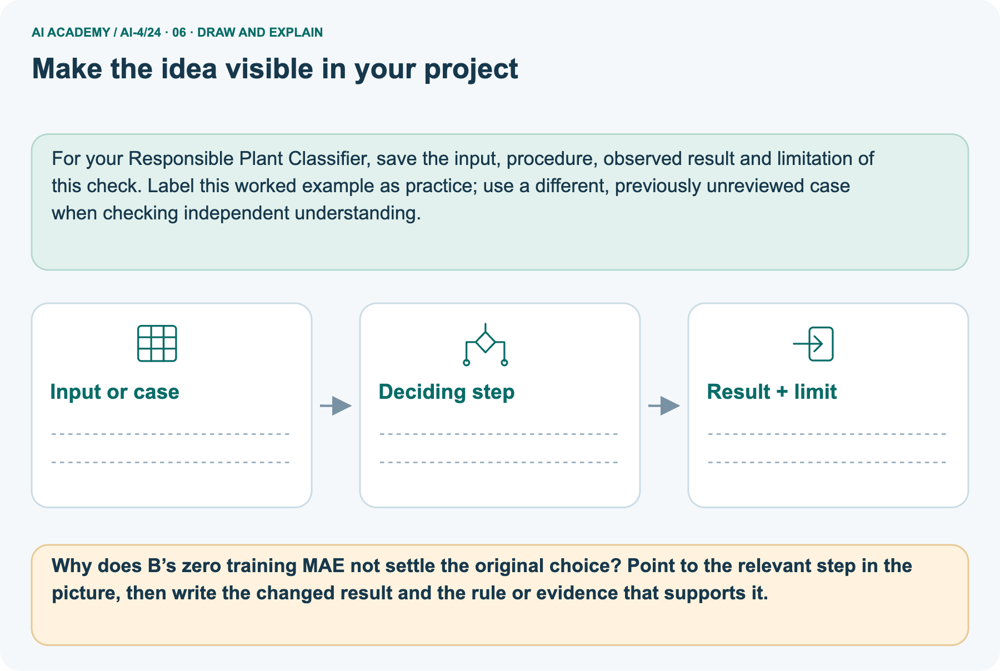

AI Academy · Level 4 · Grade 9 · Week 24 · Workbook
Train, Validation, Test
Learn to understand, design, build, test and explain AI systems responsibly.
Project: Responsible Plant Classifier
Workbook · 1 of 21
Recall and choose your starting point
Record your starting explanation for Train, Validation, Test before opening notes. Show any later correction separately.
Try the recall before opening notes. Then use a different colour or a labelled second line to correct your explanation.
Hold Out Test Data
Without opening the old lesson, explain one key idea from Hold Out Test Data. Give an example and a mistake that the idea helps you avoid.
Absolute Error and MAE
Without opening the old lesson, explain one key idea from Absolute Error and MAE. Give an example and a mistake that the idea helps you avoid.
Error Analysis
Without opening the old lesson, explain one key idea from Error Analysis. Give an example and a mistake that the idea helps you avoid.
Workbook · 2 of 21
Practise with fading help
Complete the supported Train, Validation, Test trace and record the first step you can explain without help.
Use W2: Assign data roles for Validation and model selection. Record the answer once; the lesson and workbook refer to the same attempt.
| Given inputs | Procedure I chose | Middle steps | Result and check |
|---|---|---|---|
Workbook · 3 of 21
Individual reasoning check
Check the proposed Train, Validation, Test explanation against the supplied facts before discussing it.
Use the worked case for Validation and model selection. Proposed explanation: “A final answer is enough”. Decide whether this explanation is supported.
Point to the step or supplied fact that decides; explain your repair if needed.
Workbook · 4 of 21
Independent transfer case
Write one first attempt at the reserved independent case before feedback. Repeated copies of that case refer to the same recorded attempt.
Independent case: Apply independently
Training errors P 2 Q 0 R 1; validation errors P 4 Q 6 R 4. Rule: smallest validation MAE, then simpler; P is simpler than R. Choose and state the test action.
Attempt this case before feedback. Record any help. Earlier examples below are further practice; a case already practised with feedback cannot establish fresh transfer.
Workbook · 5 of 21
Your learning target
Connect the Train, Validation, Test target to a trace and a justified conclusion.
You have 30 leaves with 3 views each. Allocate 18 leaves to train,6 to validation,6 to test. How many images are in each? Where is a learned normalisation mean fitted?
Workbook · 6 of 21
Solve the given case
Solve the supplied Train, Validation, Test case and show the deciding evidence.
Split 100 independent leaves into 60 train,20 validation,20 test.
Explain roles and preprocessing.
Show your trace, calculation or evidence
Workbook · 7 of 21
Check a changed case
Apply the procedure to the changed case and record why the conclusion follows.
Assign roles: set A fits model parameters; B selects between two models; C is opened once after choices are fixed. Which is train, validation and test?
My independent answer and reason
Week 24 Test and reflect
Workbook · 8 of 21
Design a revealing test
Specify a changed input, expected result and observation separately.
Create a changed input, boundary case or missing-information case. Write the expected answer or safe response before testing.
| Test record | My evidence |
|---|---|
| Changed input or condition | |
| Expected answer or fallback | |
| Observed result | |
| Why the result occurred |
Workbook · 9 of 21
Project checkpoint
Justify what Train, Validation, Test adds to Responsible Plant Classifier and keep the evidence.
Publish the grouped split strategy and counts for the Plant Classifier, including why plant identity stays within one split.
The project change and evidence I will keep
Workbook · 10 of 21
Self check
Judge explanation, evidence, transfer and limits separately; attach the work behind your judgement.
- I can explain the mechanism.
- I can show evidence.
- I can handle a changed case.
- I can name a limit.
Mark each as not yet, with help or independently, and attach supporting work.
Teacher review ____________________ Next step ____________________
Workbook · 11 of 21
Transfer practice from the original programme
Use this earlier case as transfer practice. A case already discussed with feedback is not fresh assessment evidence.
You have 30 leaves with 3 views each. Allocate 18 leaves to train,6 to validation,6 to test. How many images are in each? Where is a learned normalisation mean fitted?
Record support used: none, hint or teacher explanation.
Workbook · 12 of 21
W1 Choose a candidate
Choose a candidate. Apply the supplied Train, Validation, Test facts and keep your reasoning.
Apply the worked selection rule. Explain why B is not chosen.
Workbook · 13 of 21
W2 Assign data roles
Assign data roles. Apply the supplied Train, Validation, Test facts and keep your reasoning.
Where should parameter fitting, setting selection and final reporting occur?
Workbook · 14 of 21
W3 Record another attempt
Record another attempt. Apply the supplied Train, Validation, Test facts and keep your reasoning.
A team creates D after reading validation mistakes. What changes in the record?
Workbook · 15 of 21
W4 Apply independently
Attempt before feedback. If this repeats the selected independent case, reuse that first attempt; otherwise keep a separate record. Apply independently. Apply the supplied Train, Validation, Test facts and keep your reasoning.
Training errors P 2 Q 0 R 1; validation errors P 4 Q 6 R 4. Rule: smallest validation MAE, then simpler; P is simpler than R. Choose and state the test action.
Workbook · 16 of 21
W5 Limit a claim
Limit a claim. Apply the supplied Train, Validation, Test facts and keep your reasoning.
Why is the winning validation score not a guaranteed future score?
Workbook · 17 of 21
Feedback, return check and learning record
Record the first repaired step and a different case to revisit after a delay.
| Evidence | My record |
|---|---|
| Worked alone / hint / model | |
| First step I repaired and why | |
| New case checked later; date and result | |
| What I can now explain without notes | |
| One remaining question |
Revisit this idea with your teacher after a delay. Familiarity is different from explaining and using it on a changed case.
Workbook · 18 of 21
Pictorial case practice: Train, Validation, Test
Assign a separate job to training, validation and final test evidence. Explain the labelled step before checking the changed condition.
Assign a separate job to training, validation and final test evidence.
Candidates A and B have training MAE1 and 0 cm; validation MAE2 and 3 cm. Selection rule is smallest validation MAE.
All inputs and outcomes in this worked example are invented classroom data; no real model run is claimed.

Why does B’s zero training MAE not settle the original choice? Point to the relevant step in the picture, then write the changed result and the rule or evidence that supports it.
Record the help used
Support used: alone / hint / worked example. This record is practice evidence.
Project connection: For your Responsible Plant Classifier, save the input, procedure, observed result and limitation of this check.
Label this worked example as practice; use a different, previously unreviewed case when checking independent understanding.
Workbook · 19 of 21
Project portfolio milestone
Keep this week’s input, deciding step, result and limit together in the Responsible Plant Classifier record.
Project: Responsible Plant Classifier
Current milestone: Evaluate and revise. Compare with your starting method, explain errors and record a justified revision.
For your Responsible Plant Classifier, save the input, procedure, observed result and limitation of this check.
Label this worked example as practice; use a different, previously unreviewed case when checking independent understanding.
| Evidence to keep | My record |
|---|---|
| This week’s input and deciding step | |
| Prediction and actual result (or labelled paper trace) | |
| One change since the previous checkpoint and why | |
| One error or limit and the next test |
Workbook · 20 of 21
Supported practice and learning evidence
Try the supported questions before comparing with hints and feedback. Record what you repaired and the evidence you retained.
Use this supported practice once, in the browser or on paper. Keep the reserved independent assessment for a separate first attempt before teacher feedback.
Assign a separate job to training, validation and final test evidence.
Practice 1: explain the deciding evidence
Which labelled step matches this detail? Freeze A before scoring final cases; do not select again using their labels.
1. Reserve final test
2. Fit on training
3. Select on validation
Hint · try first
Hint if needed: Read the steps in the pictorial case. Match the supplied detail to the stage that performs or records it.
Feedback · compare after trying
After your attempt, compare with the supported explanation: Reserve final test Freeze A before scoring final cases; do not select again using their labels. Read the picture in order.
Freeze A before scoring final cases; do not select again using their labels. The arrows show which recorded input or intermediate result each decision uses.
Explain the deciding step aloud before checking the changed case; pointing to the final answer alone does not show how it follows.
Practice 2: explain the deciding evidence
Changed case · predict first
Changed-case practice: A and B both have validation MAE2 cm; A is simpler under a predeclared tie rule. Which conclusion is supported by the supplied facts?
1. This one example guarantees correct results for every future input.
2. Select A using the predeclared simpler-model tie-break.
3. We can decide the result without examining the changed input or the procedure.
Hint · try first
Hint if needed: Use the changed condition and the deciding step in the pictorial trace. The answer must say what follows from those facts.
Feedback · compare after trying
After your attempt, compare with the supported explanation: Select A using the predeclared simpler-model tie-break. The validation errors tie, so the stated second a = ry rule decides without consulting final data.
Repair a missing building block
Review Hold Out Test Data (ai-4/23). Goal: Freeze the full evaluation procedure before testing. Short practice: What is needed for an honest final claim about the revised version?
Point to the relevant step in the picture, then write the changed result and the rule or evidence that supports it.. Return to this week and explain what you changed.
Review Absolute Error and MAE (ai-4/21). Goal: Calculate MAE MSE and RMSE. Short practice: Why is quoting MSE as4.67 cm misleading?
Point to the relevant step in the picture, then write the changed result and the rule or evidence that supports it.. Return to this week and explain what you changed.
Review Error Analysis (ai-4/18). Goal: Categorize development errors using evidence. Short practice: What evidence would support the claim that a change helps fresh dim-light images?
Point to the relevant step in the picture, then write the changed result and the rule or evidence that supports it.. Return to this week and explain what you changed.
Keep your completed work
Use Download completed work in the hosted lesson to export your answers, reflections, practice feedback and code-run evidence. Open the HTML copy to read or print it.
Drafts stay in this browser when storage is available; clear drafts on a shared device.
Workbook · 21 of 21
Visual concept journey
Explain each Train, Validation, Test picture from its labels, then record a relevant limit.
01. Train, Validation, Test: the case

Assign a separate job to training, validation and final test evidence. Supplied facts: Candidates A and B have training MAE1 and 0 cm; validation MAE2 and 3 cm. Selection rule is smallest validation MAE.
All inputs and outcomes in this worked example are invented classroom data; no real model run is claimed.
Point to the given fact that matters most. Explain why it matters.
02. Follow the deciding steps

Fit on training: Both candidates are built using training data; B fits it more closely. → Select on validation: Choose A because2 cm is below3 cm. → Reserve final test: Freeze A before scoring final cases; do not select again using their labels.
Point to each numbered stage and explain which recorded input it uses.
03. Validation and model selection at a glance

Validation and model selection at a glance. Training | Fit each candidate | No test labels. Validation | Choose A by rule | Record every attempt. Final test | Frozen model only | Report after selection
Read the labels and values. Explain the relationship the model shows.
04. Change one thing. Trace what follows.

Original case: Freeze A before scoring final cases; do not select again using their labels. Changed condition: A and B both have validation MAE2 cm; A is simpler under a predeclared tie rule.
Expected result: Select A using the predeclared simpler-model tie-break. Reason: The validation errors tie, so the stated second a = ry rule decides without consulting final data.
Predict before checking the worked changed-case result. Name what changed and what the supplied facts allow you to conclude.
05. Connect the explanation to its limit

Read the picture in order. Freeze A before scoring final cases; do not select again using their labels. The arrows show which recorded input or intermediate result each decision uses.
Explain the deciding step aloud before checking the changed case; pointing to the final answer alone does not show how it follows.
Limit: Repeated validation use can itself overfit model choices; keep a genuinely untouched final evaluation.
Explain the case, then point to a limit on the claim.
06. Make the idea visible in your project

For your Responsible Plant Classifier, save the input, procedure, observed result and limitation of this check.
Label this worked example as practice; use a different, previously unreviewed case when checking independent understanding. Draw your input, deciding step, result and limit.
Supported question: Why does B’s zero training MAE not settle the original choice? Point to the relevant step in the picture, then write the changed result and the rule or evidence that supports it.
Draw your project trace and justify the deciding step using evidence.